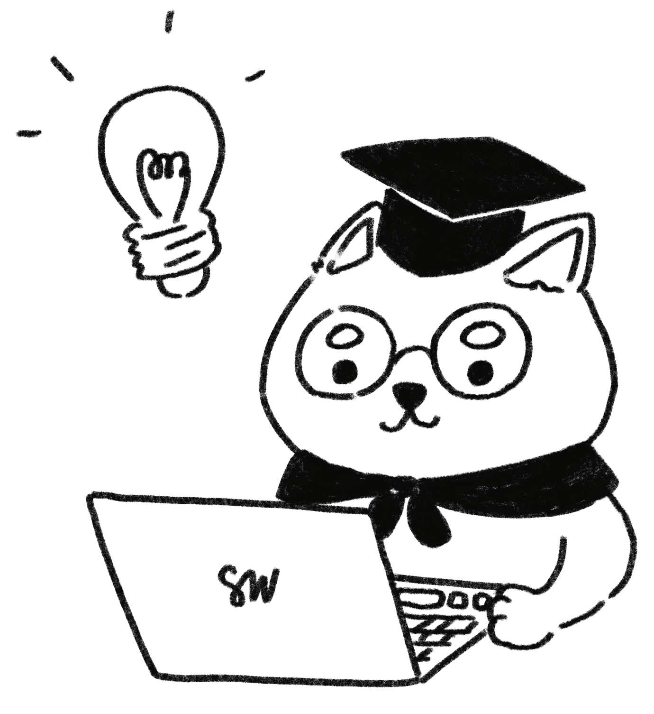

Hi. I'm Sandy.
Software Engineer.
I'm also an illustrator with great interest in front-end web development.
Work Experience
May 2020 to December 2020
Software Engineering Co-op @ Procurify, Vancouver
- Maintained the staging and production build pipeline using Circle CI to ensure that developers can safely and efficiently apply their changes to the codebase
- Created alarms using monitoring tools such as Grafana, CloudWatch and New Relic to alert on-call employees of anomalous behavior
- Dockerized an internal merge freeze application with its own CircleCI build pipeline and deployed it to the production Kubernetes cluster
- Upgraded the staging and production Kubernetes clusters on AWS EKS
- Prepared the Django backend code for the transfer of production static media files from Google Cloud Storage to AWS S3
September 2018 to April 2019
Software Engineer Intern @ Big Park Microsoft, Vancouver
- Utilized React, TypeScript, and Knockout to integrate the OneDrive Photos prototype into the existing OneDrive for Consumer
- Utilized React, Babylon.js and Typescript to create an equirectangular image viewer for OneDrive Business
Technical Skills
Languages
- Javascript/TypeScript
- Python
- HTML
- CSS
Frameworks
- React
- Express
- CSS Frameworks: Bootstrap, MaterialUI
Tools
- Git
- Node
- Docker
- Postgres
Projects
September 2021 to December 2021
CollaBoard8
Working in a team of four, we developed a web application that
facilitated real-time whiteboard collaboration. Users could
create, save, share and comment on boards.
As a team member, I set up a working starter project using React, React Router, Express, Docker, and Postgres. I also set up the development and production (uses Nginx) environments, complete with documentation for my teammates. Since I had previous web-dev experience, I actively reviewed my teammates' pull requests.
I also implemented the following features:
Language: Javascript.
Tools: React. Express.js. Node. Postgres. Docker.
As a team member, I set up a working starter project using React, React Router, Express, Docker, and Postgres. I also set up the development and production (uses Nginx) environments, complete with documentation for my teammates. Since I had previous web-dev experience, I actively reviewed my teammates' pull requests.
I also implemented the following features:
- Whiteboard Title Editor (FE/BE)
- My Boards page (FE) - Implemented a responsive grid layout using pure CSS to display a user's whiteboard along with their thumbnails, titles and last edited timestamps. Using React Router, each thumbnail was linked to their respective new and old boards's URL, which included the whiteboard's UUIDv1 ID.
- Whiteboard rectangle brush (FE) - Created a rectangle-drawing brush for the Whiteboard component, an HTML canvas.
- Whiteboard and Collaborator APIs (BE) - The API calls handled actions regarding a board and its title, adding/removing a collaborator, fetching the relevant collaborators for a board and the fetching of a specific user's boards.
Language: Javascript.
Tools: React. Express.js. Node. Postgres. Docker.
May 2018
autoDiF (Personal)
Recognizing the heavy demand for repetitive labour that is
required of an Administrative Assistant at Financial Literacy
Counsel, I devised an intuitive program that condenses the task of
dragging-and-dropping digital scanned files into their respective
client folders to one substantial *click*.
Language: Python.
Tools: Python's Tkinter GUI module. PyInstaller.
Language: Python.
Tools: Python's Tkinter GUI module. PyInstaller.
Hackathons
September 2018
Lumohacks Participant @ Simon Fraser University, Burnaby
- Received a sponsor prize for creatively utilizing HERE.com’s interactive map API to visually represent people that are local to the website user
- Worked in a team of four to create a web application that focusses on providing veterans and first-responders with PTSD a platform to connect with other similar professionals
September 2018
VanSASH Participant @ Simon Fraser University, Vancouver
- Worked in a team of four to analyze Whitecaps sales at different store locations within the stadium
- Proposed a solution for an even distribution of sales to minimize foot traffic congestion
Academia

December 2021
Athena Pathways Scholarship
- Awarded to female students with interest in learning about Artificial Intelligence
Summer 2020, Summer 2019, Spring 2018
Dean’s Honour Roll
- Awarded to students with above 3.50 GPA while taking 12 or more credits
January 2017 to April 2022
Simon Fraser University, Burnaby
- Bachelor of Science (Computing Science Major)
About Me
I've loved drawing and designing websites since I was in elementary
school. It was not a coincidence when I decided to pursue computer
science as my main career and kept illustration as my freelance side
project.
Since 2020, I have been posting my artwork on Instagram under the alias @yogurt.pan. Under the same name, I sell prints of my artwork on Etsy and print-on-demand sites (RedBubble and InPrnt). I have a strong entrepreneurial spirit and would love to work on projects that improve the customer and seller experience. :)
When I am not working on my illustration and coding projects, I enjoy reading books and playing Animal Crossing: New Horizons.
Prior to COVID 2020, I enjoyed hiking new trails and trying new restaurants with my friends.
Since 2020, I have been posting my artwork on Instagram under the alias @yogurt.pan. Under the same name, I sell prints of my artwork on Etsy and print-on-demand sites (RedBubble and InPrnt). I have a strong entrepreneurial spirit and would love to work on projects that improve the customer and seller experience. :)
When I am not working on my illustration and coding projects, I enjoy reading books and playing Animal Crossing: New Horizons.
Prior to COVID 2020, I enjoyed hiking new trails and trying new restaurants with my friends.
Got an exciting opportunity?
I am currently looking for full-time New Grad work. Message me on LinkedIn (swuqi).